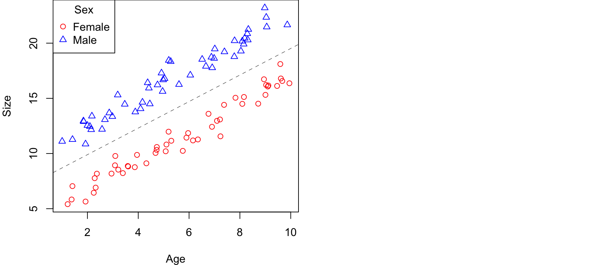
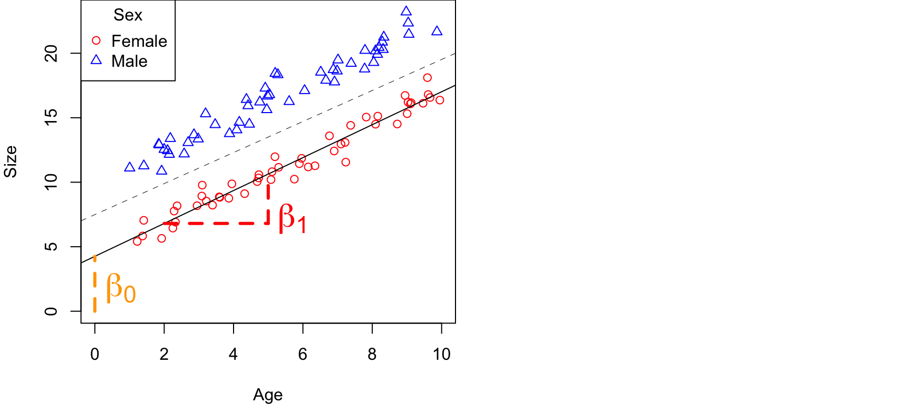
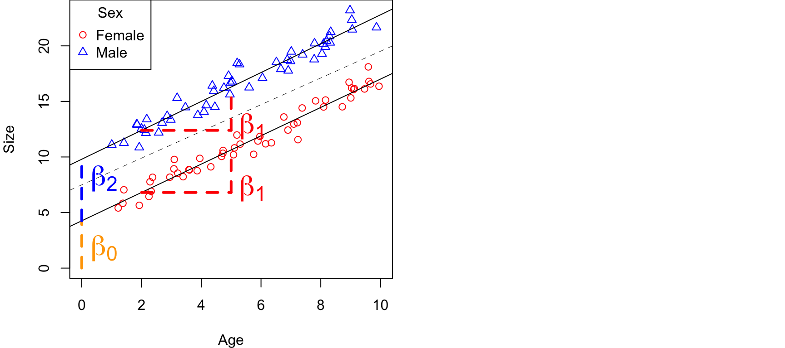
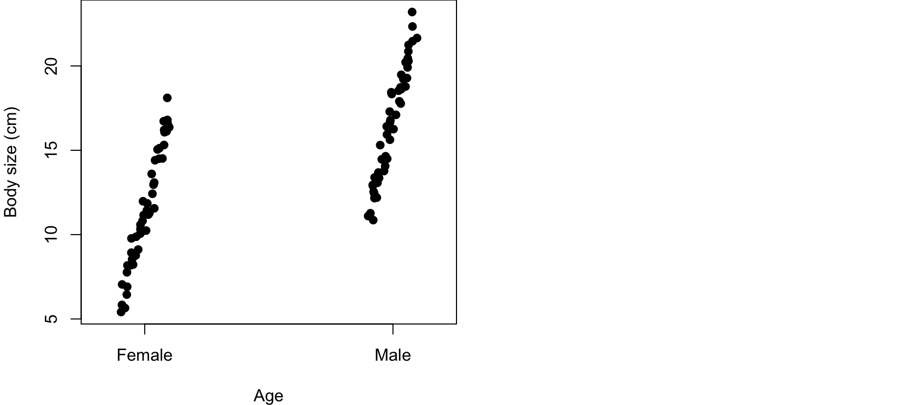
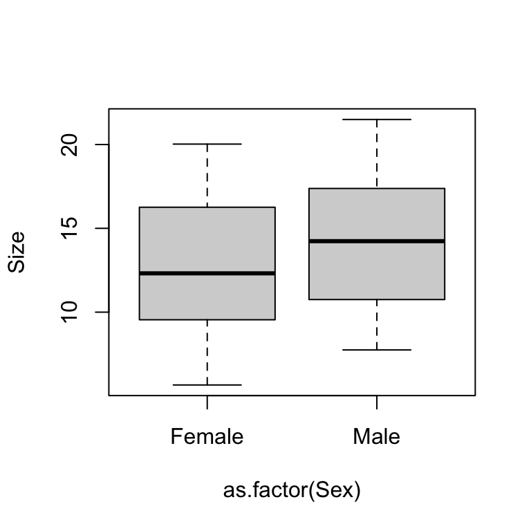
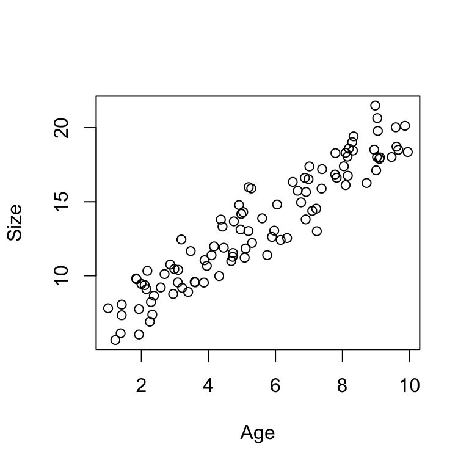
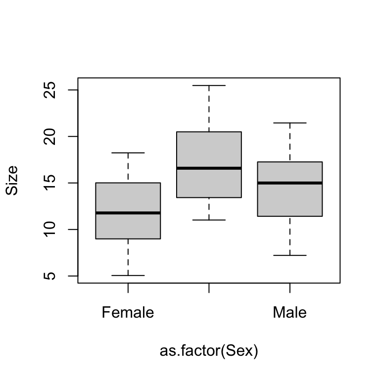
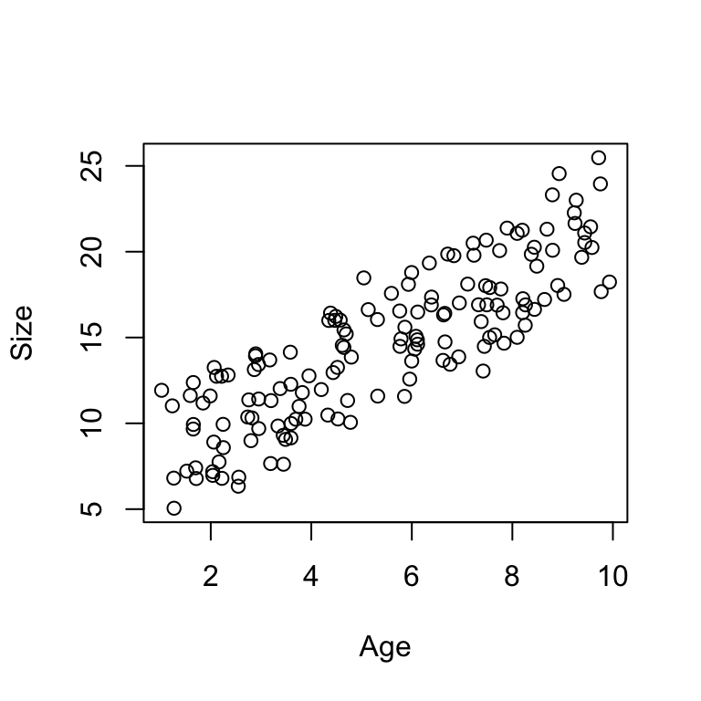

Intro to multi-variable modeling
NRES 710
Last compiled: 2024-08-21
Review of class to-date!
We have gotten quite a bit done in class so far this semester! We are at a good point to review what we have covered.
Many introductory statistics class for graduate students cover four types of analysis: t-tests, ANOVA, post-hoc tests, and linear regression. We have covered all of those topics so far as well – but by using the linear regression model as a vehicle to do all of those different tests but with one cohesive framework.
I also hope that we have emphasized that the purpose of statistics is not to generate p-values or statistically significant results. Rather, the purpose of statistics is to use facts to estimate truth. The truth we are trying to estimate is a relationship in nature, a relationship between some X-variable and some Y-variable.
- If the X-variable is continuous, we want to know what the slope is: how much does Y change for each unit change in X.
- If the X-variable is categorical, we want to understand the difference between those groups. For example, consider a drug used for medical treatment. We want to know, for example. We don’t want just know whether there is a statistical differenc between treatment groups. We want to know what the effect of that drug is.
One convenient feature of what we have learned so far is that all of X-variables can be included in this general linear model:
\(Y = \beta_0 + \beta_1 X_1 + \epsilon \sim N(0, \sigma)\)
This model can apply to both cases, with either a continuous or categorical X-variable.
- With a continuous X-variable, \(\beta_1\) is the slope.
- With a categorical X-variable, \(\beta_1\) is the difference between the
groups.
- If you have more than two groups, you will need extra X-variables and betas, which can be accomplished by dummy-coding using values of 1 and 0 to assign group ownership.
- \(\beta_0\) is always the average Y
value when all other X-variables are 0.
- For categorical X-variable, \(\beta_0\) is the reference group
- For a continuous X-variable, \(\beta_0\) is when X = 0.
Assumptions of the general linear model are:
- Continuous Y-variable
- Residuals (i.e., the error in Y) is normally distributed
- If X-variable is continuous, there must be a linear relationship between X and Y (assumption does not apply if X-variable is categorical)
- Homescedasticity; i.e., variance is constant along the range of X-values (however, t-tests and linear models can accommodate situations with unequal variance)
- There is no autocorrelation in the Y-variable
And that’s pretty much what we have covered so far.
Does anybody have any questions or is there anything you are confused about?
Multiple X-variables
I have focused much of the class to date on exploring this general linear model and how we can extend it to accommodate different circumstances. And a few times I may have mentioned that one of these extensions is to accommodate situations where we have more than one X-variable! These might be situations where we have several categorical X-variables of interest, or several continuous X-variables of interest, that we think all may influence the Y-variable. You could analyze all those X-variables separately – and there is nothing wrong with doing that. But, there are a lot of reasons why it would be better to analyze all of these X-variables at the same time. And that’s exactly what we will begin to learn about today.
Let’s extend the linear model to accommodate more than one X-variable:
\(Y = \beta_0 + \beta_1 X_1 + \beta_2 X_2 + \beta_3 X_3 + ... +\epsilon \sim N(0, \sigma)\)
\(\beta_1\) is a categorical variable with two groups, \(\beta_2\) is a categorical variable with four groups, \(\beta_3\) is a continous variable, and so on so forth.
In theory, you could have infinite effects! But in practice, with a usual computer, you are restricted to having nine or ten X-variables in the linear model.
And of course this depends on sample size. A good rule of thumb: you will need 10 samples for every X-variable in your model. If you have five X-variables, you should have at least 50 observations (rows in your datafile).
A lot of people know that you can extend this model to include multiple X-variables! But what a lot of people don’t know, or struggle to recognize, is why you might do this…
What are the advantages of analyzing all of your X-variables at the same time.
Six reasons
1. It is more elegant.
- In this day and age, it is easier and more likely for you to publish a paper if you say: “We ran a mixed-effects logistic regression model with interactions and dealt with collinearity and random effect…” Rather than to say: “we ran a t-test”. People often equate complicated statistics with good science. Sometimes it does!
- Othertimes, complicated statistics are not necessary. A well-designed experiment does not require complicated statistics!
- I would say, however, that a single, multi-variable analysis is often much more concise than iterative versions of univariate analyses – and I do see a lot of value in that.
2. Swamping – when the effect (\(\beta\)) of one variable is masked by another
- Swamping is automatically dealt with during multi-variable analyses.
- A rule in statistics (axiom) – every time you add an X into a model, the p-values for the X-variables already in the model should go down. The reason is because the p-values for your X-variables is determined by your error. When you add more X-variables into your model, you get rid of error, by explaining more noise. So, as a general rule, when you add more variables to a model, the p-values for other variables go down.
- If the variable you added explains a lot, then the p-values for other variables should go down a lot as well!
3. Collinearity – when X-variables are associated (correlated) with each other
- Collinearity is a big problem in ecology and natural resource sciences.
- Collinearity is automatically dealt with in multi-variable models.
- We will discuss this during the next class.
4. Interactions – the effect (\(\beta\)) of one X-variable depends on the value of another X-variable
- Let’s say you are studying the relationship between size and age in two different species. You collect a bunch of data, and then you analyze those two different relationships in separate analyses. This is a valid approach.
- However, what you have just done is that you have implicitly assumed an interaction. You suggested that the slope of the size-age relationship depends upon the species.
- Instead, you could have analyzed them at the same time and shown that those relationships are different.
- Interactions are kinda… in vogue/popular?! People think it’s really cool/interesting to find interactions and therefore it is useful to examine these (?)
- We will discuss these in two weeks.
5. Blocking variables (random variables)
- Similar to swamping, something that explains noise.
- Sometimes we are interested in examining a core process in nature, and we have to measure things in different areas. We know that three different forests are different, but examining the differences in the forests areas is not our main purpose. We don’t really care that the forests are different from eachother, but we want to account for the fact that the forests are different from eachother. We can use blocking or random variables to account for that random variation among sites, areas, forests, plots, whatever that are not relevant to our core process of interest.
- We’ll talk about this at the end of the semester.
6. Pseudoreplication – a process of assuming that you have more independent samples than you really do
- This is a problem in the natural sciences that many folks know about, but very few people understand.
- A topic for the final class or two in the semester.
How multi-variable models work
\(Y = \beta_0 + \beta_1 X_1 + \beta_2 X_2 + \epsilon \sim N(0, \sigma)\)
Y = Size
\(X_1\) = Age
(continuous)
\(X_2\) = Sex
(categorical)
This model has traditionally been called ‘Analysis of Covariance (ANCOVA)’.
If you have more than one categorical X, that model has historically been called a ‘Multi-factor ANOVA’.
I don’t expect you to know these terms, because I won’t use them. But you might hear them or see them, so giving them here for context…
If you have more than one continuous X, that model has historically been called a ‘Multiple Regression’ – as opposed to our simple linear regression with one X-variable.
However, we can call them all ‘General Linear Models’ – much easier!
\(Y = \beta_0 + \beta_1 Age + \beta_2 Sex + \epsilon \sim N(0, \sigma)\)
Y = Size
\(X_1\) = Age
(continuous)
\(X_2\) = Sex
(categorical; male = 1)
Important point: when we run this model, it does not change the meanings of the betas at all! They are still interpretted the same ways as we have interpretted them before.
- The meaning of \(\beta_1\) is the effect (slope) of age on size – or the slope of the age-size relationship
- The meaning of \(\beta_2\) is the difference between male and females (or, the effect of being male compared to the reference, female).
The fact that we have an age effect in the model does not change our interpretation of the sex effect – or vice versa!
So, this ‘more complicated model’ does not make it harder to interpet these betas – they still have the same meaning!
Let’s see what this looks like.
Conceptual example
Continuing the size (Y) by age (X) and sex (X) example, consider this plot of data:

One of the things I want to point out is that… we can run a simple regression between age and size!
Q: If I did that, where would the line be? Right down the middle – between the two clusters of data.
Q: Would we get a good estimate of the age-sex relationship? Yes! It would be pretty good.
Error: But, our error would be pretty large**. We can indicate this with a normal curve overlayed on top of the regression line and the spread of the data.
Now let’s consider what would happen if we run the multivariable model. What’s actually going to happen is we are going to get two lines! One for females, and one for males. Let’s break up the model and examine this:
\(Y(female) = \beta_0 + \beta_1 Age + \cancel{\beta_2 * 0} + \epsilon \sim N(0, \sigma)\)

What happens to the Beta2 * Sex term for females? It goes away, because Sex = 0 for females. So now we have a line just for female data!
Error: Our error for this line will be much smaller than for a line for all the data. We can indicate this with smaller normal curves overlayed on top of the data and regression line for females.
The Y-intercept for this line is Beta0, the slope for this line is Beta1.
Now let’s examine this for males.
\(Y(male) = \beta_0 + \beta_1 Age + \beta_2 * 1 + \epsilon \sim N(0, \sigma)\)
Let’s rearrange the equation to move \(\beta_2\) over next to \(\beta_0\). We can do that because these are both just being added.
\(Y(male) = (\beta_0 + \beta_2) + \beta_1 Age + \epsilon \sim N(0, \sigma)\)
So basically what this is saying is that our intercept is now \(\beta_0 + \beta_2\). In other words, the intercept for the male equation is the female intercept (\(\beta_0\)) plus the difference of being male (\(\beta_2\)).
The slope for the male line is the same term as the slope for the female line ($_1)!
We can also visualize this on our graph:

Error: As with the line for females, our error for this line will be much smaller than for a line for all the data. We can indicate this with smaller normal curves overlayed on top of the data and regression line for females.
Ultimately, by using this equation, we can capture all of the meaningful variation in the data, and it does so by allowing for much smaller error than more simple models.
The meaning of the betas has not changed. \(\beta_1\) is the slope for both lines, and \(\beta_2\) is the difference between the groups. Notice that \(\beta_2\) is not just the difference between the groups at age of zero, it’s the difference everywhere! It’s constant along the variation of the continuous X-variable.
Questions?
Previously I mentioned one of the reasons we like multi-variable analysis is it automatically accounts for swamping. For example, if we run univariate analysis (a model with one X-variable), we may not observe a statistically significant result because a ton of variation in the system is explained by another X-variable. The result is ‘swamped’ out by the other X-variable that we did not include. The effect of one X-variable is masked by another.
By adding in multiple X-variables, multi-variable analysis automatically deals with swamping.
Because we have decreased the error related to all of the terms in our model, we have also decreased the p-values for each term.
It’s also entirely possible that if we had not included one of the X-variables in our model, we might NOT have recovered good estimates of the \(\beta\) and instead failed to reject the null hypothesis of no effect.
For example, looking back at our original line fit to all of the data. We may have recovered a significant slope for this line, but our would have been higher, our confidence intervals would have been larger, and our estimate would not have been certain.
What if we wouldn’t have included age in the model?

Q: Are these groups going to be significantly different from eachother?
Maybe… but there is a lot of noise here, and the groups overlap eachother. A linear model of sex alone [e.g., lm(Size ~ Sex)] may not return significance and thus we would fail to reject the null hypothesis of no difference between groups.
Takehome message: by accounting for how both age and sex influences size in the model, our models will, in general, explain more variation and better recovery real, statistically-significant results. This helps minimize negative effects of swamping.
Multi-variable models in R
Simple analysis
So let’s load up some data in R and take a look at it. The dataset is located here.
# Load in the data and take a look at it
datum <- read.csv("lecture_12_dataset1.csv")
# Take a look at it
head(datum)## Age Sex Male Size
## 1 3.588198 Female 0 9.584951
## 2 8.094746 Female 0 16.119282
## 3 4.680792 Female 0 10.986892
## 4 8.947157 Female 0 18.515617
## 5 9.464206 Female 0 18.015692
## 6 1.410008 Female 0 7.328189tail(datum)## Age Sex Male Size
## 95 3.883359 Male 1 11.043810
## 96 2.689220 Male 1 10.109105
## 97 8.040649 Male 1 17.391569
## 98 1.842355 Male 1 9.813866
## 99 5.201011 Male 1 15.981604
## 100 5.603549 Male 1 13.875699The data include:
- observations of animals of different ages (1-10 years old, roughly)
- different sexes (males and females)
- a dummy-coded variable for sex (0 = female, 1 = male)
- body size
What was the Truth used to simulate these data? The code to simulate these data are included at the bottom of this page. But, here’s a quick summary:
Truth:
- \(\beta_1\) = 1.5 (age effect)
- \(\beta_2\) = 2.5 (beta for sex; a.k.a., the effect of being male)
- \(\beta_0\) = 4 (y-intercept for reference group)
- \(\sigma\) = 0.8
Let’s plot it! Start with the effect of sex on size.
# Plot the effect of sex on size
plot(Size ~ as.factor(Sex), data = datum)
Yeesh! A lot of noise here, a lot of interlap between our two groups. This is not particularly useful.
Let’s look at the effect of age on size.
# Plot the effect of sex on size
plot(Size ~ Age, data = datum)
Can we see a difference between males and females? Not really. Maybe we could if we plotted the points using different colors or point types for each sex. But there is not a clear separation of points suggestion of two groups looking at it like this.
Let’s now start by running a regression between sex and size.
# Simple regression between size and sex
results1 <- lm(Size ~ Sex, data = datum)
summary(results1)##
## Call:
## lm(formula = Size ~ Sex, data = datum)
##
## Residuals:
## Min 1Q Median 3Q Max
## -6.9825 -3.1260 -0.1583 3.3057 7.3875
##
## Coefficients:
## Estimate Std. Error t value Pr(>|t|)
## (Intercept) 12.6384 0.5512 22.930 <2e-16 ***
## SexMale 1.5984 0.7795 2.051 0.043 *
## ---
## Signif. codes: 0 '***' 0.001 '**' 0.01 '*' 0.05 '.' 0.1 ' ' 1
##
## Residual standard error: 3.897 on 98 degrees of freedom
## Multiple R-squared: 0.04114, Adjusted R-squared: 0.03136
## F-statistic: 4.205 on 1 and 98 DF, p-value: 0.04297Remember, truth for the effect of being male, \(\beta_2\), was 2.5. Our results here suggest that this effect is 1.5. But it is statistically significant – although barely (p = 0.04). Our confidence limits are about ~1.5 (2 * SE). So our best guess from this model is that males are about 1.5 kg larger than females (+/- 1.5). This is a pretty noisy estimate – but it does contain truth, which was 2.5.
Notice the residual standard error is about ~4. Truth was 1! So this is about four times larger than truth. There is a lot of extra noise (error) in this simple model! Noise is often not just random variation, but there might be other information that might explains that noise in size. In this case, a lot of the variation in size is driven by age, while very little information is driven by sex.
Q: How much variation in size is explained by sex? Only 4%! The multiple \(R^2\).
Let’s now start by running a regression between age and size.
# Plot
plot(Size ~ Age, data = datum)
# Simple regression between size and age
results2 <- lm(Size ~ Age, data = datum)
summary(results2)##
## Call:
## lm(formula = Size ~ Age, data = datum)
##
## Residuals:
## Min 1Q Median 3Q Max
## -2.97536 -1.08735 -0.01096 1.07418 2.97800
##
## Coefficients:
## Estimate Std. Error t value Pr(>|t|)
## (Intercept) 5.45489 0.31583 17.27 <2e-16 ***
## Age 1.45482 0.05219 27.88 <2e-16 ***
## ---
## Signif. codes: 0 '***' 0.001 '**' 0.01 '*' 0.05 '.' 0.1 ' ' 1
##
## Residual standard error: 1.332 on 98 degrees of freedom
## Multiple R-squared: 0.888, Adjusted R-squared: 0.8869
## F-statistic: 777 on 1 and 98 DF, p-value: < 2.2e-16The effect of Age is 1.45 (+/- 0.10), which is great because it is very close to and overlaps with truth (1.5)! This is also highly significant, P = 2x10^-16.
We don’t really need to include sex in the model to get a good estimate of the effect of age. Why…?
Because age explains 88% of the variation in size! We get pretty good estimates of this effect of age on size without including information on sex. However, if we do, this R^2 value will increase also!
Let’s run the full model.
# Simple regression between size and age
results3 <- lm(Size ~ Age + Male, data = datum)
summary(results3)##
## Call:
## lm(formula = Size ~ Age + Male, data = datum)
##
## Residuals:
## Min 1Q Median 3Q Max
## -1.94453 -0.48216 -0.03362 0.43280 1.88202
##
## Coefficients:
## Estimate Std. Error t value Pr(>|t|)
## (Intercept) 4.18997 0.20133 20.81 <2e-16 ***
## Age 1.48718 0.02994 49.68 <2e-16 ***
## Male 2.17478 0.15281 14.23 <2e-16 ***
## ---
## Signif. codes: 0 '***' 0.001 '**' 0.01 '*' 0.05 '.' 0.1 ' ' 1
##
## Residual standard error: 0.7618 on 97 degrees of freedom
## Multiple R-squared: 0.9637, Adjusted R-squared: 0.963
## F-statistic: 1289 on 2 and 97 DF, p-value: < 2.2e-16Q: What are we seeing that is different about this output than the previous two outputs?
- The effect of age is much closer to truth! And still highly significant.
- The effect of male is now much closer to truth!
- The simple sex model had a p-value = 0.04, but now it’s 2e-16! We drastically increased our ability to estimate this significant effect.
- The y-intercept for the reference group (females) is closer to truth (4.18 vs. 4).
- \(R^2\) value jumped up to 0.96! We are now explaining more information in size than either of the previous two simple models (0.04, 0.88) combined. This model, as a whole, explains 96% of the variation in size.
- Standard error estimate is much closer! 0.76 is closer to truth (0.80).
This is a good illustration of swamping. Swamping occurs when the effect of one variable is drowned out by another variables effect. Univariate analysis may fail to recover all of the significant effects; our ability to measure statistically significant effects can be swamped out by other variables. By including all of these variables in a single model, we can correctly account for variation explained by different variables and appropriately measure and identify these statistically-significant effects.
This is an advantage of using multi-variable analysis: by analyze all of the variables together, it improves our ability to estimate truth!
NOTE: something weird is happening. Even now with this improved model, our effect of age (2.17; +/- 0.3, 95% CI) does not overlap with truth!!
Sometimes this happens due to random chance during data simulation! Basically, the simulation process ended up simulating pretty extreme data for the male effect in this case, due to random chance. Given our sample size and effect size, our estimate does not overlap in truth, even after correctly specifying the true model. This happens maybe 1 out of every 20 simulations. That’s just part of the randomness of data and science!
Reporting results
One sentence for every X-variable, and those sentences will be the same as we have used before.
For the continuous X-variable, provide a results sentence for a continuous variable. “For each 1 year in increase in age, we observed a 1.49 (+/-0.06; +/-95% CI) kg increase in body size (P < 2e-16).”
For the categorical X-variable, provide a results sentence for that variable illustrating the difference between sexes. “We also found that body size of males was 2.17 (+/-0.30; +/-95% CI) kg heavier than females (P < 2e-16).”
One sentence for each variable, and the same sentences we already know!
More complex analysis
Let’s assume the same dataset as before, but we now have a third group: hermaphrodites. Individual animals with sexual reproductive organs for both sexes. The dataset is located here.
# Load in the data and take a look at it
datum <- read.csv("lecture_12_dataset2.csv")
# Take a look at it
head(datum)## Age Sex Male Herma Size
## 1 8.061177 Female 0 0 16.139566
## 2 1.084869 Female 0 0 5.063627
## 3 8.011593 Female 0 0 15.443615
## 4 7.564516 Female 0 0 16.054494
## 5 6.671187 Female 0 0 13.194306
## 6 5.328197 Female 0 0 13.556531tail(datum)## Age Sex Male Herma Size
## 145 8.798210 Hermaphrodite 0 1 21.82848
## 146 7.377167 Hermaphrodite 0 1 21.99917
## 147 7.843596 Hermaphrodite 0 1 19.44455
## 148 2.323757 Hermaphrodite 0 1 12.11445
## 149 4.222513 Hermaphrodite 0 1 15.99407
## 150 7.059992 Hermaphrodite 0 1 19.99809# Make sure Sex is a factor
datum$Sex <- as.factor(datum$Sex)I simulated these data using the same ‘truth’ as before for males and females; males were 2.5 kg larger than females on average. But now I simulated the third hermaphrodite group where hermaphrodites are 5 kg larger than females on average.
# Plot the data
plot(Size ~ as.factor(Sex), data = datum)
# Plot again
plot(Size ~ Age, data = datum)
Let’s jump straight to the full model:
# Multi-variable analysis
results <- lm(Size ~ Age + Sex, data = datum)
summary(results)##
## Call:
## lm(formula = Size ~ Age + Sex, data = datum)
##
## Residuals:
## Min 1Q Median 3Q Max
## -1.95435 -0.53198 0.03605 0.54930 2.06974
##
## Coefficients:
## Estimate Std. Error t value Pr(>|t|)
## (Intercept) 3.90356 0.18905 20.65 <2e-16 ***
## Age 1.49374 0.02724 54.84 <2e-16 ***
## SexHermaphrodite 5.29954 0.16797 31.55 <2e-16 ***
## SexMale 2.52226 0.16803 15.01 <2e-16 ***
## ---
## Signif. codes: 0 '***' 0.001 '**' 0.01 '*' 0.05 '.' 0.1 ' ' 1
##
## Residual standard error: 0.8398 on 146 degrees of freedom
## Multiple R-squared: 0.9644, Adjusted R-squared: 0.9636
## F-statistic: 1317 on 3 and 146 DF, p-value: < 2.2e-16So our interpretation of this is essentially the same as our interpretation before.
- We have a continuous effect of age, which is different due to random variables but still a good estimate.
Q: What is the interpretation for the ‘SexHerma’ effect? Difference between hermaphrodites and females. We would use our standard sentence to explain that.
Q: What is the interpretation for the ‘SexMale’ effect? Difference between males and females. Again, standard sentence to explain that.
Q: What if we want to know the difference between males and hermaphrodites? Change the reference
Let’s do that real quick.
# Use the relevel function to change order of sex
results2 <- lm(Size ~ Age + relevel(Sex, ref = "Male"), data = datum)
summary(results2)##
## Call:
## lm(formula = Size ~ Age + relevel(Sex, ref = "Male"), data = datum)
##
## Residuals:
## Min 1Q Median 3Q Max
## -2.03163 -0.50182 -0.03787 0.59082 2.01269
##
## Coefficients:
## Estimate Std. Error t value Pr(>|t|)
## (Intercept) 6.61063 0.18105 36.51 <2e-16
## Age 1.50211 0.02573 58.37 <2e-16
## relevel(Sex, ref = "Male")Female -2.60280 0.16290 -15.98 <2e-16
## relevel(Sex, ref = "Male")Hermaphrodite 2.42728 0.16290 14.90 <2e-16
##
## (Intercept) ***
## Age ***
## relevel(Sex, ref = "Male")Female ***
## relevel(Sex, ref = "Male")Hermaphrodite ***
## ---
## Signif. codes: 0 '***' 0.001 '**' 0.01 '*' 0.05 '.' 0.1 ' ' 1
##
## Residual standard error: 0.8145 on 146 degrees of freedom
## Multiple R-squared: 0.9675, Adjusted R-squared: 0.9669
## F-statistic: 1451 on 3 and 146 DF, p-value: < 2.2e-16I haven’t changed anything about age, but just replaced sex with the relevel function inside our linear model.
And voila! Here is our difference between hermaphrodites and males.
# Back to original results
summary(results)##
## Call:
## lm(formula = Size ~ Age + Sex, data = datum)
##
## Residuals:
## Min 1Q Median 3Q Max
## -1.95435 -0.53198 0.03605 0.54930 2.06974
##
## Coefficients:
## Estimate Std. Error t value Pr(>|t|)
## (Intercept) 3.90356 0.18905 20.65 <2e-16 ***
## Age 1.49374 0.02724 54.84 <2e-16 ***
## SexHermaphrodite 5.29954 0.16797 31.55 <2e-16 ***
## SexMale 2.52226 0.16803 15.01 <2e-16 ***
## ---
## Signif. codes: 0 '***' 0.001 '**' 0.01 '*' 0.05 '.' 0.1 ' ' 1
##
## Residual standard error: 0.8398 on 146 degrees of freedom
## Multiple R-squared: 0.9644, Adjusted R-squared: 0.9636
## F-statistic: 1317 on 3 and 146 DF, p-value: < 2.2e-16What if I asked you to give a p-value for the significance of the sex variable as a whole? Before, we used the p-value in the bottom-right hand output of our results. But now this new modeling approach also has a continuous X-variable involved, so this p-value now relates to the significance of our larger multi-variable modeling approach, which includes both age and sex.
You could do it this way:
# ANOVA
anova(results)## Analysis of Variance Table
##
## Response: Size
## Df Sum Sq Mean Sq F value Pr(>F)
## Age 1 2084.29 2084.29 2955.66 < 2.2e-16 ***
## Sex 2 702.46 351.23 498.07 < 2.2e-16 ***
## Residuals 146 102.96 0.71
## ---
## Signif. codes: 0 '***' 0.001 '**' 0.01 '*' 0.05 '.' 0.1 ' ' 1But you shouldn’t – and here’s why.
The ANOVA function in R gives you Type I Sum of Squares.
Type I p-values – sequential – such that, order matters.
When it runs the F-drop test for age: it compares two models:
- Age: \(\beta_0 + \beta_1 Age\) vs. \(\beta_0\)
- Sex: \(\beta_0 + \beta_1 Age + \beta_2 Sex\) vs. \(\beta_0 + \beta_1 Age\)
So when it tests for the effect of the sex variable, it asks how much does sex improve the model? Does adding sex significantly improve the model beyond having age alone. It does the same for age, but it tests having age in the model vs. having nothing.
I would prefer this if it compared the full model with sex to the full model without sex – and order didn’t matter.
Let’s see what happens if we switch this around.
# Switch order of effect
results3 <- lm(Size ~ Sex + Age, data = datum)
anova(results3)## Analysis of Variance Table
##
## Response: Size
## Df Sum Sq Mean Sq F value Pr(>F)
## Sex 2 626.76 313.38 472.35 < 2.2e-16 ***
## Age 1 2260.26 2260.26 3406.85 < 2.2e-16 ***
## Residuals 146 96.86 0.66
## ---
## Signif. codes: 0 '***' 0.001 '**' 0.01 '*' 0.05 '.' 0.1 ' ' 1The F-values change between these two outputs, which means our results and resulting inference might change. I don’t like this because the data are the same, and the models are the same! If we have the same data and the same model, the results and inference should be the same. Order of model parameters should not change p-values and results!
The sequential nature of p-values in this multi-variable ANOVA is another reason why I am not a big fan of the canned ‘ANOVA’-style analyses. These ANOVA functions use Type I Sum of Squares to calculate p-values, and we are better off avoiding this.
Instead, we want to use Type III Sum of Squares, where it always does an F-drop test.
Q: Does anybody have an idea about how we might evaluate the significance of the sex variable as a whole?
Hint: we learned how to do this last class…
We can build a more complex and a more simple models ourselves, and then compare them ourselves, using an F-drop test.
# Simple model
results4 <- lm(Size ~ Age, data = datum)
# More complex model
results5 <- lm(Size ~ Age + Sex, data = datum)
# F-drop test
anova(results4, results5)## Analysis of Variance Table
##
## Model 1: Size ~ Age
## Model 2: Size ~ Age + Sex
## Res.Df RSS Df Sum of Sq F Pr(>F)
## 1 148 729.66
## 2 146 96.86 2 632.8 476.9 < 2.2e-16 ***
## ---
## Signif. codes: 0 '***' 0.001 '**' 0.01 '*' 0.05 '.' 0.1 ' ' 1This p-value is the significance of our Sex variable as a whole.
It is the same p-value and result that we saw before when we did ‘anova(lm(Size + Age + Sex))’, but only because we had sequentially listed ‘age then sex’ did that analysis compare the ‘Age’ model vs ‘Age + Sex’ model.
The point is we can remove the ambiguity of sequential p-values and force the analysis to use the Type III Sum of Squares and compare the more complicated and more simple models manually, as we have shown here.
Takehome: if you are performing a multi-variable analysis and want to know the significance of an entire categorical variable with more than two groups, use an F-drop test.
Another thing I want to show you is what happens if you try to use a Tukey post-hoc test for this model.
# Model
results6 <- lm(Size ~ Sex + Age, data = datum)
summary(results6)##
## Call:
## lm(formula = Size ~ Sex + Age, data = datum)
##
## Residuals:
## Min 1Q Median 3Q Max
## -2.03163 -0.50182 -0.03787 0.59082 2.01269
##
## Coefficients:
## Estimate Std. Error t value Pr(>|t|)
## (Intercept) 4.00784 0.18114 22.13 <2e-16 ***
## SexHermaphrodite 5.03008 0.16290 30.88 <2e-16 ***
## SexMale 2.60280 0.16290 15.98 <2e-16 ***
## Age 1.50211 0.02573 58.37 <2e-16 ***
## ---
## Signif. codes: 0 '***' 0.001 '**' 0.01 '*' 0.05 '.' 0.1 ' ' 1
##
## Residual standard error: 0.8145 on 146 degrees of freedom
## Multiple R-squared: 0.9675, Adjusted R-squared: 0.9669
## F-statistic: 1451 on 3 and 146 DF, p-value: < 2.2e-16# Tukey
results6 <- aov(results6)
TukeyHSD(results6, which = "Sex")## Tukey multiple comparisons of means
## 95% family-wise confidence level
##
## Fit: aov(formula = results6)
##
## $Sex
## diff lwr upr p adj
## Hermaphrodite-Female 5.005883 4.620149 5.391618 0
## Male-Female 2.595707 2.209972 2.981441 0
## Male-Hermaphrodite -2.410176 -2.795911 -2.024442 0The betas changed! Difference between females and males changed between outputs.
Post-hoc tests should not change effects! They should only change confidence intervals and p-values.
I am not sure what happens here, but I think the ‘TukeyHSD()’ call forced our multi-variable model to be a single X-variable model, with just Age. It ignored Sex.
Post-hoc tests may not exist for your more complicated models! So that is why we like to leverage the flexibility of the linear modeling framework with ‘lm()’.
Summary
You can run all of your variables at once in a multi-variable model! The advantages include:
- Elegance (conciseness)
- Swamping (does this automatically)
- Collinearity (next class)
- Interactions
- Random variables
- Pseudoreplication
The last three, you have to do something to account for those – but the first three are done automatically.
It does not change the meaning of the betas, and we can still report them with our simple, concise sentences.
If you want to know the significance of categorical variables with >2 groups as a whole, we can test for it using the F-drop tests. If there is only 2 groups, you can just see that from the ‘lm()’.
Truth
Here is code to simulate the data we analyzed in this lecture.
### Lecture 12: code to simulate data for multi-variable analysis
# Set the seed for reproducibility & set graphing parameter
set.seed(123); par(mar=c(4,4,0,0)); par(mfrow=c(1,2))
# First dataset
# X variable
n <- 50
x1 <- c(rep("Female", n), rep("Male", n))
x2 <- runif(n * 2, 1, 10)
dummy <- data.frame(model.matrix(~ x1 - 1))
colnames(dummy) <- c("Female", "Male")
# Simulate error
Error <- rnorm(n * 2, 0, 0.8)
# Predict Y
Response <- 4 + 1.5 * x2 + 2.5 * dummy$Male + Error
# Dataframe
datum <- data.frame(Age = x2, Sex = x1, Male = dummy$Male, Size = Response)
# Save the data
write.csv(datum, "lecture_12_dataset1.csv", row.names = FALSE)
# Second dataset
# X variable
n <- 50
groups <- 3
x1 <- c(rep("Female", n), rep("Male", n), rep("Hermaphrodite", n))
x2 <- runif(n * groups, 1, 10)
dummy <- data.frame(model.matrix(~ x1 - 1))
colnames(dummy) <- c("Female", "Hermaphrodite", "Male")
# Simulate error
Error <- rnorm(n * groups, 0, 0.8)
# Predict Y
Response <- 4 + 1.5 * x2 + 2.5 * dummy$Male + 5 * dummy$Hermaphrodite + Error
# Dataframe
datum <- data.frame(Age = x2, Sex = x1, Male = dummy$Male, Herma = dummy$Hermaphrodite, Size = Response)
# Save the data
write.csv(datum, "lecture_12_dataset2.csv", row.names = FALSE)